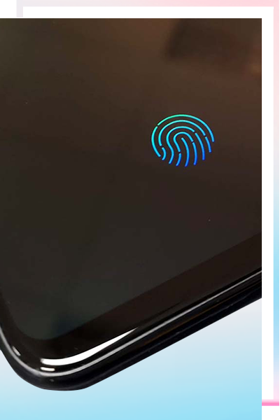
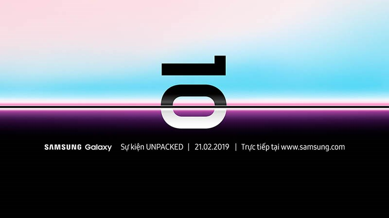
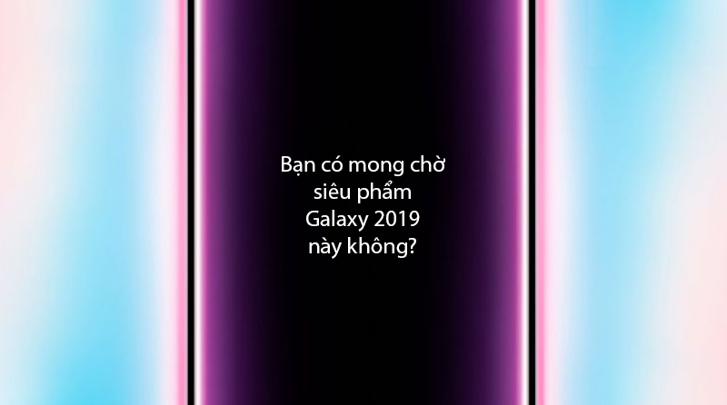

Với tần suất rò rỉ không ngừng nghỉ và số lượng không thể đếm xuể thì ngay lúc này, chúng ta đã biết được hầu như toàn bộ thông tin về siêu phẩm Galaxy S10. Và nếu bạn muốn xem lại tất cả tin đồn này ngay bây giờ, hãy kéo xuống và đọc tiếp phía dưới.
Bài viết này được dịch lại từ những thông tin do trang công nghệ TechRadar tổng hợp, vì vậy những danh từ nói chung chung như nguồn tin, tin đồn,... có thể hiểu là những tin tức được TechRadar dẫn lại.
Để bắt đầu, chúng ta hãy tìm hiểu về tên gọi mà Samsung sẽ dành cho "những đứa con mới". Trước đây trong một lần trả lời phỏng vấn, Koh Dong-jin - người đứng đầu bộ phận di động của Samsung cho biết hãng đã suy nghĩ đến việc có nên tiếp tục duy trì tên gọi Galaxy S và cách đánh số như trước giờ hay không.
Vì vậy, không loại trừ khả năng Samsung sẽ thay Galaxy S bằng Galaxy X hoặc như một nguồn tin rò rỉ gần đây thì hãng sẽ mang hậu tố "Egde" trở lại với Galaxy S10.
Nhưng sau tất cả, những cái tên kể trên nghe có vẻ hơi "bất hợp lý", nên "dù ai nói ngả nói nghiêng, hãy gọi là 'S' đúng không cả nhà?". Và trong bài viết này, chúng ta sẽ tiếp tục gọi siêu phẩm 2019 của Samsung là Galaxy S.
Nếu thường xem tin tức về Galaxy S10 có lẽ bạn cũng đã biết rằng Samsung sẽ giới thiệu 3 phiên bản là Galaxy S10, Galaxy S10 Plus (Galaxy S10+) và Galaxy S10 Lite (Galaxy S10E) tại sự kiện Unpacked 2019 sắp tới.
Trong đó, Galaxy S10 (được gọi là phiên bản tiêu chuẩn) sẽ có màn hình cong 6.1 inch, bản cao cấp nhất Galaxy S10 Plus cũng có màn hình cong 6.4 ich, riêng sản phẩm giá rẻ hơn Galaxy S10 Lite sẽ có màn hình phẳng 5.8 inch. Điểm chung của chúng là màn hình đều có tỉ lệ 19:9 thay vì 18.5:9 như Galaxy S9.
Được biết, cả 3 phiên bản sẽ được giữ lại cổng tai nghe 3.5 mm, cùng chạy hệ điều hành Android 9 Pie khi ra mắt, sử dụng con chip Snapdragon 855 hoặc Exynos 9820 mới nhất (tùy thuộc vào từng thị trường), RAM sẽ đạt từ mức 8 - 12 GB, bộ nhớ lưu trữ là từ 128 - 512 GB (mức RAM/ROM cao nhất có thể chỉ xuất hiện trên biến thể "Plus").
Hiện tại, có rất nhiều nguồn tin cho biết, ngoại trừ Galaxy S10 Lite sở hữu camera kép thì 2 sản phẩm còn lại đều có hệ thống 3 camera ở mặt sau. Trong khi đó ở mặt trước, mẫu Galaxy S10 Plus sẽ có 2 lỗ khoét ở góc bên phải màn hình cho camera selfie còn S10 và S10 Lite chỉ có 1.
Về màu sắc, những rò rỉ mới nhất cho thấy năm nay Samsung sẽ mang khá nhiều phối màu mới cho dòng Galaxy S 2019 như Đen, Xám, Xanh lam, Đỏ, Xanh lục và Vàng,...
Bên cạnh 3 phiên bản kể trên thì người ta còn tin rằng, Samsung còn một mẫu Galaxy S10 thứ tư - có thể được gọi là Galaxy S10 X với màn hình lớn đến 6.7 inch, tích hợp hệ thống 6 camera ở mặt sau (bao gồm một cảm biến ToF dùng để đo khoảng cách từ máy đến vật thể, phục vụ cho chụp ảnh 3D hoặc tương tác thực tế tăng cường AR) cũng như hỗ trợ mạng 5G.
Cho đến thời điểm này, có khá nhiều tin rò rỉ và tranh cãi xoay quanh hệ thống camera của các mẫu Galaxy S10.
Có nguồn tin nói rằng, Galaxy S10 Lite có camera kép, Galaxy S10 & S10 Plus cùng có 3 camera trong khi cũng có nguồn tin khẳng định chỉ trừ mẫu cao cấp nhất có 3 camera mặt sau, 2 sản phẩm còn lại đều chỉ có camera kép.
Với nguồn tin thứ nhất, họ cho biết mẫu S10 & S10 Lite sẽ có hệ thống camera với ống kính siêu rộng 16 MP f/1.9 + ống kính thường 12 MP có khả năng thay đổi khẩu độ.
Trong khi đó nguồn tin thứ 2 khẳng định, camera trên S10 và S10 Plus sẽ là một hệ thống bao gồm cảm biến 12 MP, khẩu độ thay đổi từ f/1.5 - f/2.4 + ống kính góc rộng 123 độ, 16 MP, f/1.9 kết hợp cùng ống kính tele 13 MP với khẩu độ f/2.4.
Ở phía trước, nhiều hình ảnh render đều cho chúng ta thấy Galaxy S10 & S10 Lite đều có 1 camera nằm ở phía trên bên phải màn hình còn S10 Plus sẽ có camera kép.
Nhìn chung, vấn đề bao nhiêu camera cũng không quan trọng bằng việc tối ưu thuật toán máy ảnh. Hy vọng Samsung sẽ làm tốt khâu này để giúp siêu phẩm 2019 của mình có sức cạnh tranh tốt hơn.
Nói về dung lượng pin, hiện tại các nguồn tin cho chúng ta biết như sau:
Ở phần tính năng đáng lưu ý, có lẽ cảm biến vân tay siêu âm dưới màn hình chính là điểm nhấn cho dòng Galaxy S mới.
Theo các rỏ rỉ, cả 3 model đều có cảm biến vân tay dưới màn hình, trong khi Galaxy S10 Lite dùng loại cảm biến quang học chậm và ít chính xác hơn thì phiên bản tiêu chuẩn và bản "Plus" sẽ dùng loại cảm biến siêu âm mới nhất của Qualcomm - loại này chưa từng được sử dụng trên bất kỳ smartphone nào.
Tuy nhiên, cũng có nguồn tin nói rằng Galaxy S10 Lite sẽ được trang bị cảm biến vân tay nằm ở nút nguồn chứ không được nhúng trên màn hình như 2 model cao cấp còn lại.
Và do có thiết kế gần như tràn viền 100%, phải khoét lỗ cho camera selfie nên người ta tin rằng, Samsung sẽ loại bỏ tính năng quét mống mắt trên cả 3 mẫu Galaxy S10 và thay vào đó là cải tiến khả năng quét khuôn mặt 3D, sao cho nó tốt như đối thủ Apple iPhone.
Bên cạnh đó, nhiều nguồn tin cũng khẳng định Samsung sẽ tích hợp công nghệ phát âm thanh thông qua màn hình (Sound on Display, kiêm cả 2 nhiệm vụ loa ngoài và loa đàm thoại) dành cho cả 3 model mới nhất.

Có một điều chắc chắn là Galaxy S10 sẽ được giới thiệu vào ngày 20/2, trước khi triển lãm di động toàn cầu MWC 2019 khai mạc. Và sau đó, thiết bị rất có thể được lên kệ vào ngày 8/3 tại Hàn Quốc, Ý và nhiều nước khác. Như vậy có thể xem đây là thời điểm lên kệ toàn cầu của Galaxy S10.
Tuy nhiên, các nguồn tin cũng lưu ý: Đây chỉ là ngày bán ra của 3 mẫu Galaxy S10, Galaxy S10 Plus và Galaxy S10 Lite còn nếu bạn muốn mua chiếc S10 hỗ trợ mạng 5G - có thể được gọi là Galaxy S10 X thì phải chờ đến ngày 29/3.

Về giá bán, hiện tại có rất nhiều nguồn tin cho biết như sau:
Bản rẻ nhất, Galaxy S10 Lite sẽ có giá 650 - 750 USD (khoảng từ hơn 15 - 17.5 triệu) trong khi Galaxy S10 128 GB sẽ có giá 779 USD (hơn 18.1 triệu) và 999 USD (hơn 23.2 triệu) đối với phiên bản bộ nhớ 512 GB.
Một nguồn khác nói rằng mức giá khoảng 1.055 USD (hơn 24.5 triệu) sẽ dành cho Galaxy S10 phiên bản tiêu chuẩn (6 GB RAM, ROM 128GB), tăng lên khoảng 1.340 USD (hơn 31.1 triệu) đối với phiên bản có 8 GB RAM và 512 GB dung lượng lưu trữ.
Trong khi ở một số thị trường, Galaxy S10 Lite (hoặc có thể gọi là Galaxy S10E) sẽ có giá khoảng 710 USD - 800 USD (hơn 16.5 - khoảng 18.6 triệu).
Nhìn chung, giá bán năm nay của Galaxy S10 sẽ tăng so với Galaxy S9 và hiện tại, chưa có nguồn tin nào tiết lộ giá bán của Galaxy S10 Plus. Có lẽ chúng ta cần chờ thêm một thời gian nữa.
